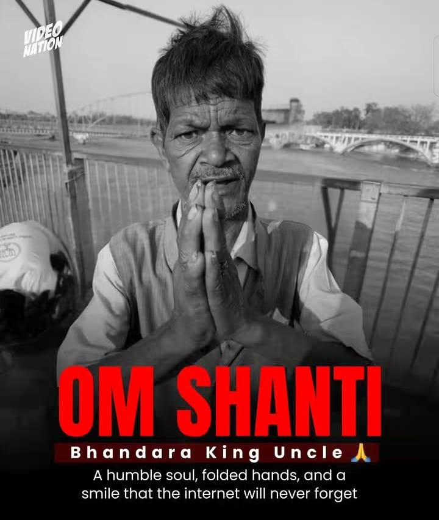

The internet can turn an ordinary person into an overnight sensation, but what happens when the laughter fades? The recent, heartbreaking news surrounding the man famously known as "Insta Bhandara Uncle" has sparked a heavy conversation across social media about the dark side of viral fame in India.
Known for his simple, humble phrase—"Babuji, Bhandara Kara Do"—which he originally uttered to a stranger on a train, the man quickly became the subject of thousands of memes, Instagram reels, and YouTube videos. However, reports are now circulating that the man behind the viral catchphrase has tragically passed away.
What Happened to Bhandara Uncle?
According to unverified reports widely shared on Instagram and X (formerly Twitter), the man's body was discovered in a train toilet near Haridwar. The news broke through various tribute videos and reels, with creators and fans expressing shock and mourning his sudden death.
While the exact cause of death remains unknown—with speculations ranging from sudden health emergencies to foul play—the railway police have yet to issue an official statement or FIR summary confirming his identity or the circumstances of his passing.
The Hidden Cost of Meme Culture
The tragedy of "Bhandara Uncle" has reignited debates about how the internet treats economically vulnerable individuals who go viral without their consent.
- No Financial Support: While content creators and meme pages generated millions of views and advertising revenue from his video, the man himself received no royalties, credit, or structural support.
- Unwanted Attention: People from marginalized backgrounds often lack the resources to handle sudden public recognition. They become public spectacles, photographed and filmed by strangers without permission.
- A Tragic Pattern: The situation draws uncomfortable parallels to the case of "Bhangar Wale Baba," a 70-year-old viral sensation from Rajasthan who tragically died by suicide after immense ridicule and unwanted attention two years ago.
The Internet Mourns
The tone on social media has drastically shifted from humor to deep reflection. Netizens are now urging content creators to be more empathetic and responsible when filming strangers on the streets or in public transport.
As the internet mourns with "Om Shanti" messages and tribute posters, it serves as a stark reminder: behind every viral meme is a real human being with a real life. The least the man who brought smiles to millions deserves is dignity in his final moments.
If you or someone you know is struggling with mental health, please reach out to local helplines or professional counselors for support.
